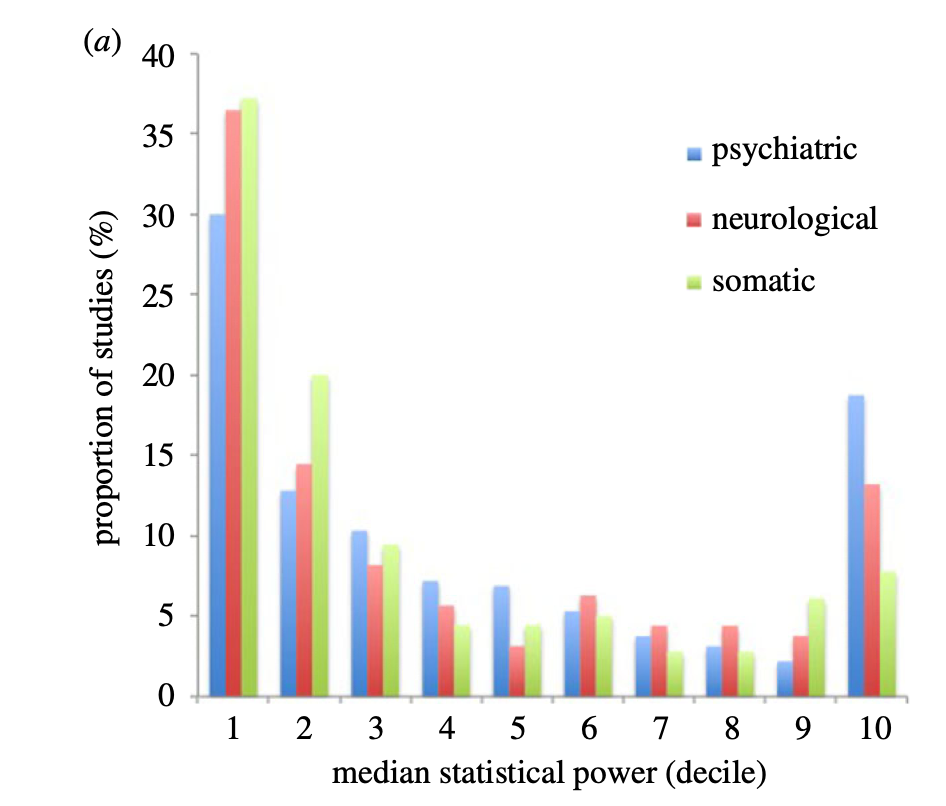
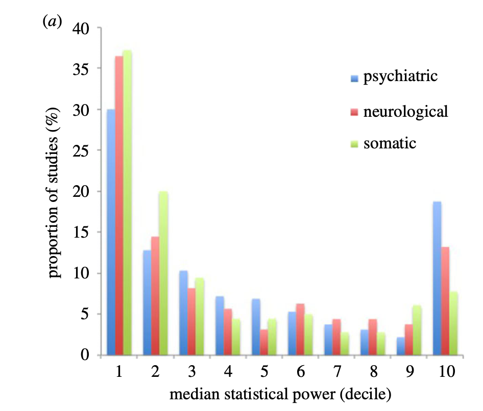
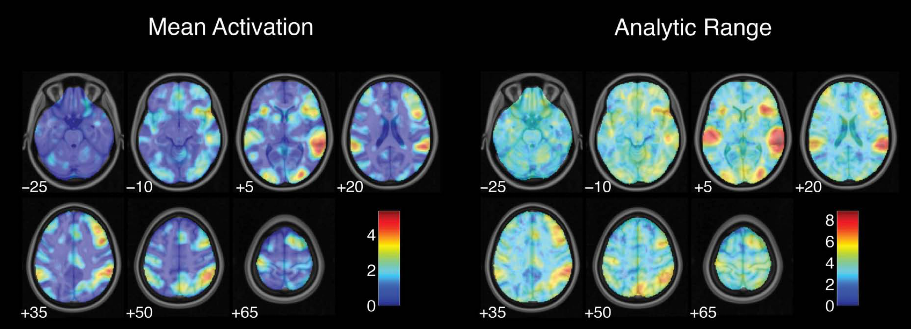
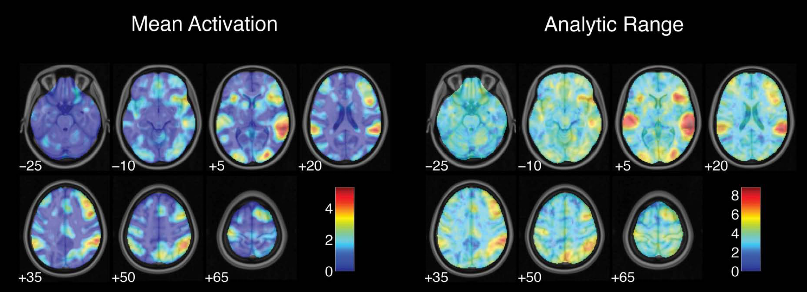

Reproducibility in neuroimaging: What is the problem?
What is the brain dysfunction in major depression?
Meta-analysis of 99 published studies

Muller et al, 2017, JAMA Psychiatry


We seem to have created quite a mess.
How can we fix it?
Towards an ecosystem for open and reproducible neuroscience


Designing a more reproducible scientific enterprise

Designing a more reproducible scientific enterprise

Improving the choice architecture of science
- Choice architecture
- particular set of features that drive people toward or away from particular choices
- Nudges
- Improving incentives
- Using the power of defaults
- Providing feedback
- Expecting and prevent errors


- The smaller the studies conducted in a scientific field, the less likely the research findings are to be true.
Neuroscience research is badly underpowered


 

Low power -> unreliable science
Positive Predictive Value (PPV): The probability that a positive result is true
Winner’s Curse: overestimation of effect sizes for significant results


Button et al, 2013
Small samples = high instability of statistical estimates

Schonbrodt & Perugini, 2013

Marek et al., 2022
Small samples + publication bias: the case of candidate genes


Candidate gene associations fail in well-powered GWAS

Jason stein et al. for the ENIGMA Consortium
“In general, previously identified polymorphisms associated with hippocampal volume showed little association in our meta-analysis (BDNF, TOMM40, CLU, PICALM, ZNF804A, COMT, DISC1, NRG1, DTNBP1), nor did SNPs previously associated with schizophrenia or bipolar disorder”
Estimating realistic effect sizes

Estimating realistic effect sizes
Estimating realistic effect sizes

Unbiased effect size estimate
Small samples -> variable estimates of predictive accuracy

Varoquaux, 2018
Small samples + publication bias -> inflated accuracy estimates

Varoquaux, 2018
A golden age of data sharing

- The greater the flexibility in designs, definitions, outcomes, and analytical modes in a scientific field, the less likely the research findings are to be true.

Poldrack et al., 2017
 

It’s not just fMRI


The purpose of this paper is to demonstrate how common and seemingly innocuous methods for quantifying and analyzing ERP effects can lead to very high rates of significant but bogus effects, with the likelihood of obtaining at least one such bogus effect exceeding 50% in many experiments.
- The requirement for clinical trial registration was associated with many more null effects
- This is a “cost” under the current incentives to publish

Kaplan & Irvin, 2015
Data collection: Mixed gambles task
- Functional MRI data for 108 subjects collected at Tel Aviv University

Botvinik-Nezer et al., 2020, Nature
How variable are workflows in the wild?

- Teams provided a detailed written description of analysis workflows
- No 2 teams used an identical workflow
- Even with detailed written description it was often impossible to tell exactly what was done!
Botvinik-Nezer et al., 2020, Nature
What is the effect of analytic variability on outcomes?

- Across teams there were 33 different patterns of outcomes
- For any hypothesis, there are at least 4 workflows that can give a positive result
Botvinik-Nezer et al., 2020, Nature

Botvinik-Nezer et al., 2020, Nature

Botvinik-Nezer et al., 2020, Nature

Botvinik-Nezer et al., 2020, Nature
How to improve analytic reproducibility

Software errors hit home

http://reproducibility.stanford.edu/coding-error-postmortem/
Software errors hit home

http://reproducibility.stanford.edu/coding-error-postmortem/
Software errors hit home

http://reproducibility.stanford.edu/coding-error-postmortem/
Bug-hacking

- Bugs that confirm our predictions are less likely to be uncovered than bugs that disconfirm them
Coding for reproducibility
- High quality code should be:
- Readable
- Robust
- Modular
- Well-tested
- Coding is a craft
- The only way to improve one’s skills is through consistent and deliberate practice

https://software-carpentry.org
Coding style
- “code is read much more often than it is written” so readability counts (G. van Rossum)
- Nearly all languages have conventions for coding style
- Following them makes your code easier for others to understand
- “others” includes your future self!
- There are also language-independent principles of software design

Code review
- Linus’s law
- “given enough eyeballs, all bugs are shallow.”
- If no humans are available to review, AI tools can be helpful

Automated testing

Reproducibility vs. validity
- Reproducibility does not ensure validity
- The code could be reproducibly wrong!